Selamoo E-commerce Theme Guide
- edited: 16/06/2019
- latest update: 02/01/2020
- by: Deltoro Corp
- email: Selamoo.shop@gmail.com
We would like to thank you for purchasing Selamoo theme.
This file will teach you how to set up and use the Selamoo WordPress theme. I hope that you'll find it easy to use and customize. I really wish it will fulfil your needs Please read this manual, because it covers almost all the aspects needed for you to know about installing & running the theme. Enjoy your Selamoo theme!.
Best Regards,
Nasa WordPress Team
Installing WordPress
To install this theme you must have a working version of WordPress already installed. For information in regard to installing the WordPress platform, please see the WordPress Codex – http://codex.wordpress.org/Installing_WordPress
Installing Selamoo Theme
To install Selamoo theme please follow these steps:
1. Download
Download a theme package file from ThemeForest. Uxnzip the package file on your computer – theme package folder will be created.
2. Installing a WordPress theme is super easy via your Dashboard
Step 1: Login to your WordPress admin
Step 2: Find Appearance → Themes in the Dashboard.
Step 3: Click button Add New (on top of the page) and go for Upload option.
Step 4: Open the browse, then pick Selamoo-theme.zip in the downloaded Theme package from ThemeForest.
Step 5: Click Install Now.
3. Installing By FTP
In some cases, the Wordpress theme maybe too large to install through Wordpress dashboard. In such situations, we suggest you to upload the theme via FTP.
If you don't know how to use FTP, visit this link for more information: http://codex.wordpress.org/FTP_Clients.
In general, first, you need to uncompress the Wordpress theme ".zip" in the Themepackage downloaded from Themeforest. But in Selamoo Theme Package, we have unziped them already into Selamoo folder and . Each unzipped folder contains all nessesary files to install the theme, include layouts, css and php files contained all theme code. Using the FTP to transfer the folder of this theme to the Wordpress theme's root directory: /wp-content/themes.
Do not upload any of the other files or folders such as licensing or resource or documentation. Uploading any of the other folders may cause problems, making the theme not work properly. And the sample data folder will be use to import demo data, check the INSTALL DATA DEMO later.
Learn more from Wordpress Official Documentation on installing theme with FTP client or with cPanel: http://codex.wordpress.org/Using_Themes
4. Activate Theme to be Your Default Theme
After successful upload the theme, activate to set it your theme.
Go to your Dashboard >> Appearance >> Themes >> Activate Selamoo Theme is now yours.
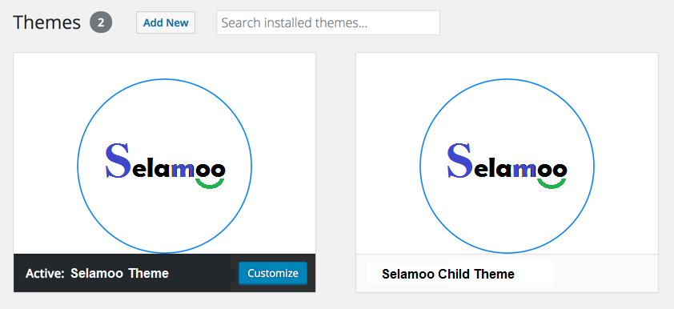
5. Install plugins require
Right after you have activated the theme, a notification will appear, suggest you to continue with the installation of the plugins recommended in order to get the best functions like our demo's.
Follow these steps to install plugins:
Step 1. Click ‘Begin installing plugins‘ and select the plugins you need to install from the list (Should select ALL plugins).
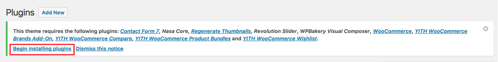
Step 2: Choose Install, then Click Apply to begin the action:
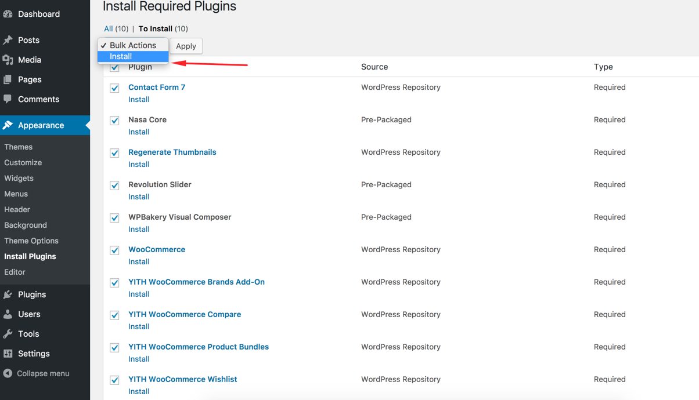
This theme comes bundled with many plugins. Some are required and some are optional. (Note: 3 Required and 6 Optional)
- Nasa Core – Add the some theme featured (Required)
- WooCommerce - WordPress eCommerce plugin (Required)
- WPBakery Pages Builder (Visual Composer) – Used for page builder (Required)
- Revolution Slider – Used for main Sliders (Optional)
- Contact Form 7 - Used for contact form and newsletter signup (Optional)
- YITH WooCommerce Wishlist - Adds wish list functionalty to category grid and product pages(Optional)
- YITH WooCommerce Compare - Compare functionalty products(Optional)
- YITH WooCommerce Product Bundles - Adds Gift product(Optional)
- YITH WooCommerce Brands Add-On - Open Brands functionalty products
After install susccessful the plugins go to the Plugins
Step 3: they need to be activated at Plugins > Installed plugins . Select all plugins and Click Active
Installing Demo Content
1. One Click install
With Selamoo theme, you can import our sample data with only easy one click install.
Before installing, there are some notes worth checking:
- Make sure you have installed all recommended plugins before importing sample data.
- It is better to install sample data on a fresh Wordpress installation (means removing older data if existed).
- The import process may take several minutes due to large size data and your server capacity. If your server setting "Max Execution Time" is too low, increase it (contact your hosting provider).
Recommend:
max_execution_time = 3000
PHP Max Input Time: max_input_time = 3000
upload_max_filesize = 128M
PHP Max Input Vars: max_input_vars = 5160;
- Please do not close the browser until it finished. If it fails, please run this process again until seeing the "Success Message".
- If you have to run the process more than once, menu items may be duplicated. Just go to Appearance > Menus and edit/delete Main Menu items
Now, let's import the sample demo. Navigate the Dashboard -> Appearance -> Theme Options -> General -> Click Import Demo Content button
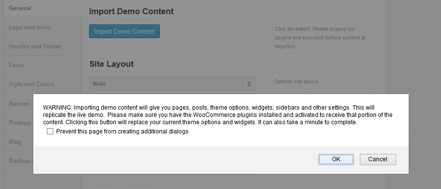
Wait until you get successful message like below.
If you have to run the process more than one time, menu items may be duplicated. Just go to Appearance > Menus and edit/delete Main Menu items

2. Using Regenerate Thumbnail
After sucessfully imported demo data, you should use Regenerate Thumbnails to create images into different size in order to make images fit their size and quality, so your site will display perfect as well as run faster. These settings take action with the actual dimensions of your product images in the shop pages.
Go to Dashboard -> Tools -> Regen. Thumbnails. Click Regenerate All Thumbnails

Settings page
1. Create page with Visual Composer page builder
You can quickly build a home page using Visual Composer for WordPress. It is a drag and drop frontend and backend page builder plugin that will save you tons of time working on the site content. You will be able to take full control over your WordPress site, build any layout you can imagine without a single touch of code. No programming knowledge required!
From your Dashboard, navigate to Pages
- Select All Pages to see all pages. Then click edit the page you want.
- Select Add New to create new page
Each one page always include lot of parts like Header, Main Page, Widget Sidebar and Footer. The main page may be build using Visual Composer mentioned above. (It is licensed, but we have purchased and included for you).
Have you ever used Visual Composer ? Please follow this guide first :http://vc.wpbakery.com/video-academy/
Using Visual Composer, you can drag and drop elements you want to build your page layout.
2. Theme Elements
Moreover we also provide to you more elements to create your shop page easier. They are named Nasa elements:
Using Visual Composer -> Click Add element -> Select Nasa Widgets -> Choose Elements you want
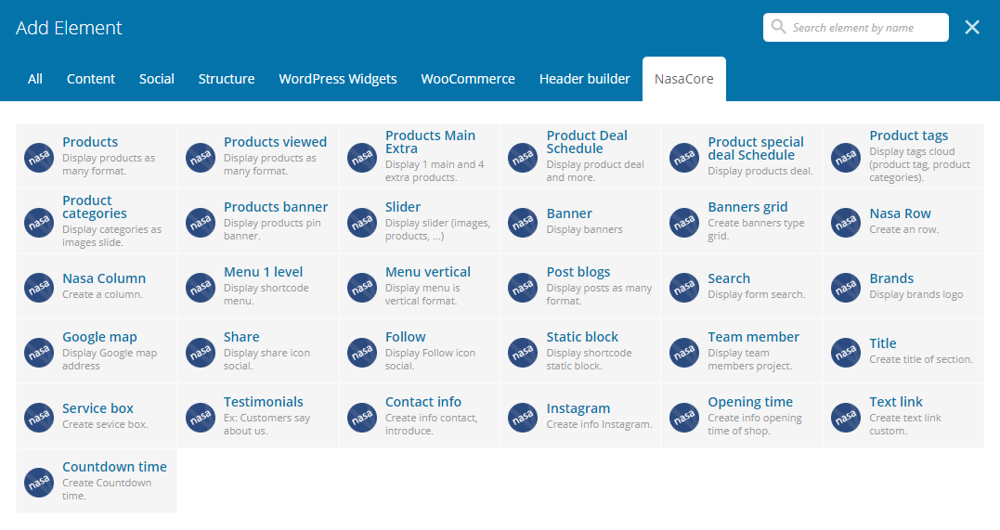
2.3. Nasa Banner
Allows you to add a banner image and an overlay text. It also allows you to animate the banner on hover action.
Parameter element Settings
- Banner image: Banner Background.
- Banner Height (px): The banner height.
- Link: URL that links when click to the banner.
- Content width (%): The banner text block width.
- Horizontal alignment: The content text block Horizontal alignment. (LEFT / RIGHT / CENTER)
- Move Horizontal a distance (%):
- Move content text block go to LEFT (if Horizontal alignment is LEFT)
- Move content text block to to RIGHT (if Horizontal alignment is RIGHT)
- Vertical alighment: The content text block Vertical alignment. (TOP / MIDDLE / BOTTOM)
- Text alignment: The content text alignment (LEFT / CENTER / RIGHT)
- Banner Text: The content text block (Support HTML tag)
- Effect banner content: Support animation effect library.
- Effect banner hover. The banner image background effect when mouse hover.
Widgets
Go to Admin Panel -> Appearance -> Widgets.
You can see all our widgets, easy to configure by drag and drop Widgets to sidebar.
Then you can set sidebars to position you want.
Setting Menu
The following steps will guide you in defining your menus using the WordPress menu editor and Nasa Megamenu. The mega menus are available only for top level navigations items only in "Main Menu" area.
Follow the steps below to create a mega menu:
Step 1 - Add a an item to the menu editor. This has to be a top level item!
Step 2 - Click on arrow icon in the top right-hand and exapnd.
Step 3 - Check the "Enable megamenu".
Step 4 - Write in the "Megamenu columns" the number of columns you want to use (from 3 to 5).
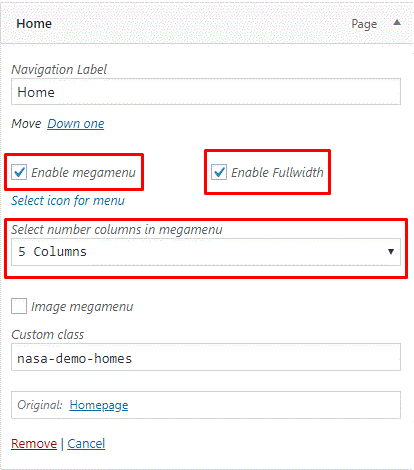
Step 5 - Now, you need to add child menu items, which will represent columns in the mega menu.
First level of child items will represent Titles in each of 3 columns.
Add 3 sub child menu items, like on the image below.
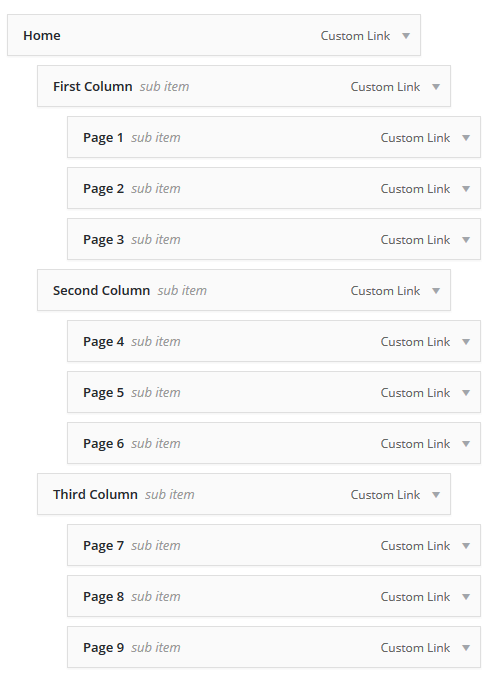
Step 6 - Adding Widget / Image to the Menu. To do this first you need to have a sidebar set with some widget. Ex: Mega Menu Widget.
Step 7 - When you have set your sidebar with widget click on the sub child menu you want to turn into widget area ( we will turn the third column into a widget area), make sure it doesn't have sub menu
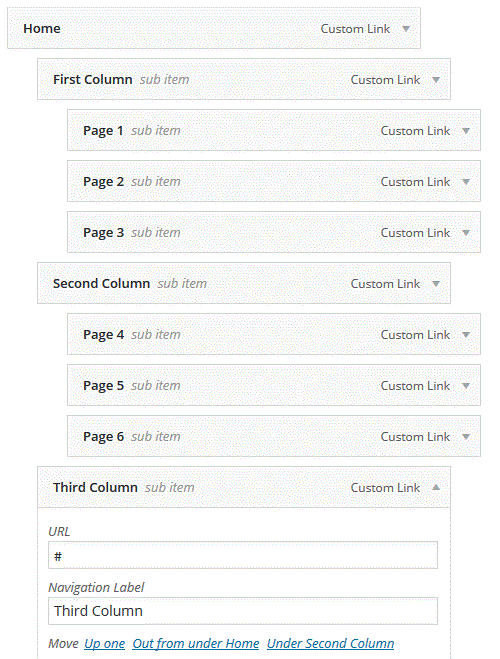
The menu dropdown should now look something like this :

Theme Options Panel
Selamoo featured an amazingly powerful and beautiful Theme Options where you can find all the theme settings. It is as easy to use as it gets and offers several different options fields and input types which help to set the right option value.
How to use theme admin panel?
Go to Apperance > Theme Options
-
Tab General : Manage general setting like site layout, site background image for boxed layout
-
Tab Logo and icons : Manage setting like your logo
-
Tab Header and Footer : Manage Header and Footer options
-
Tab Style & Colors : Customize the colors theme appearance
-
Tab Product Page : Manage Product page options
-
Tab Promo Popup : Manage News letter popup
-
Tab Blog: Manage Blog page
-
Tab Portfolio: Manage Portfolio page
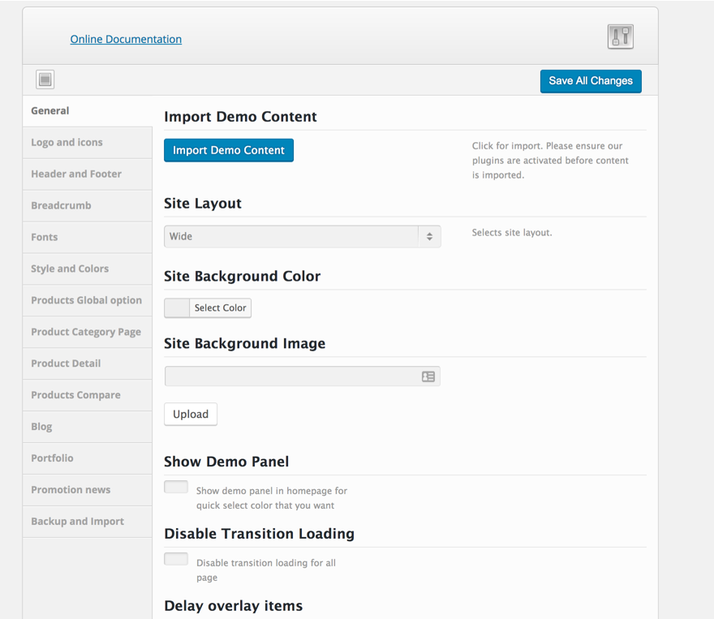
Translations
Gon is ready to translate by using the po file. If you want to build a multilingual site, you need to use WPML plugin. Our theme does not include the WPML plugin. It only is compatible with the WPML plugin. You have to buy a license for this plugin.
1. Using Po File
There are 2 ways to create and edit the po file
- Use the Poedit software and refer this document
- Use the translation plugins, such as Loco Translate or Codestyling Localization plugins
- You have to generate the mo file after translating
- You already set your language. Go to Settings > General and check Site Language option
2. Using WPML
In this section, you will know how to build a multilingual website by using the WPML plugin. All the information needs to get started and use it is on the WPML.org page.
Below are some reference links:
Installing and Setting Up the WPML plugin
You need to install a recent version of WPML, including the String Translation, Translation Management and CMS Navigation modules. After installing these plugins, you set up Languages from WPML > Languages and translate your content.
Translating Pages and Posts
Go to All Pages and pick a page for translation. Click on the plus icon. If the page is already translated, the plus icon will be replaced with a pen icon.

WPML actually creates a new WordPress page, linked to the original one. In this new page, you can add new content as you normally do. You can also keep the original content, just translate into the new language.
Translating Categories
To translate a category, click on the language which you want to translate it and then add a new category. Make sure the new category is linked to an original category.
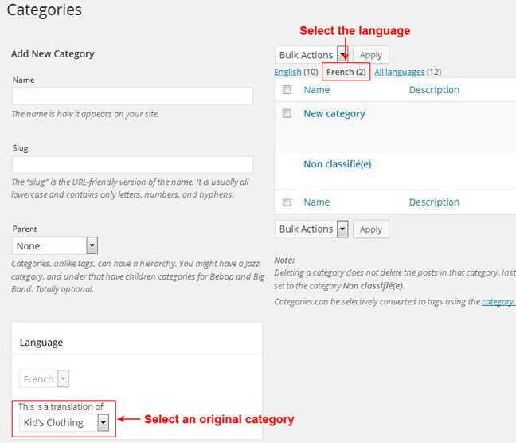
Translating Menus
You go to WPML > String Translation. Find the text in the list and translate it. Please make sure you check the Translation is complete checkbox after translating.
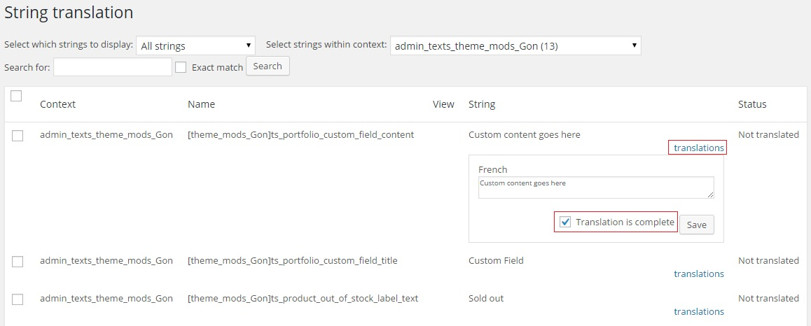
Sometimes, some texts are not translated. First, you need to go to WPML > Theme and Plugins localization. You click on the Scan the theme for strings button. Then, you go back to the String Translation page and find those texts.
How to?
1. How to change Header style
- Go to Appearance -> Theme Options -> Header and Footer.
- Select Header type do you want and Click Save All Changes
2 .Setup Footer type as the same demo
The theme are using Visual Composer to create Footer style so you can create unlimited Footers style.
From DashBoard > Footer > Add New Footer. You can drag any element you want to footer.
When you import our demo content through our Theme Options Importer, the Custom Menu will not be enabled. This is due to a limitation in WordPress, because it does not allow custom menu settings to import. But we have it setup so you can quickly enable the Custom Menu.
Go to the Appearance > Widgets. Drag the Custom Menu from Available Widgets to the Footer Widgets. Make sure you created Menu on Appearance > Menus
3. How to add the banner to the Shop page
Go to the Appreance -> Theme Options -> Category shop banner. Insert revolution slider shortcode here Make sure you created Revolution Slider on Dashboard -> Revolution Slider
4. How to edit Contact Form or Newsletter form
-
Go to Forms -> Click Edit Contact Us form
- Click Field Settings. Click to the dropdown field that you want edit
- After Edit. Click Save All Settings
5. How to insert video link to product
-
Go to Products -> Edit product that you wan insert video link
-
Click Additional Tab in the Product Data panel
- Input video link to Product Video Link field
- Click Update
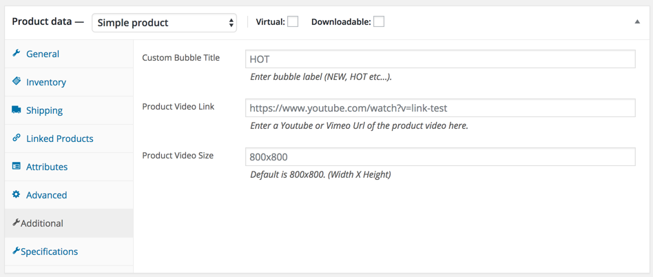
6.0. How to use the variation products
- Navigate Products -> Attributes -> Add New Attribute (Ex: Size)
- Click to Config icon in the attribute row that you created at the right side
- Add New Size for this. Ex: M, L, XL...
- Navigate Products -> Edit product that you want set attributes
- Set Product Variables at the Product Data
- Select Size from Custom product Attributes -> Click Add
- Click Select All from Value text box. Click Used for variations
- Select Variations the left menu. Click Go. CLick Expand. Input price. Click Save Changes
- Publish product
6.1. How to setting color - Size - image for variation products
-
Setting Color (Size - Label | Image) attribute for product please work follow images:
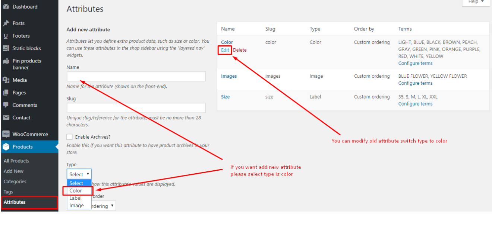
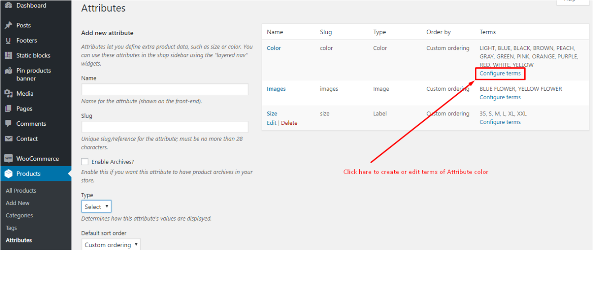
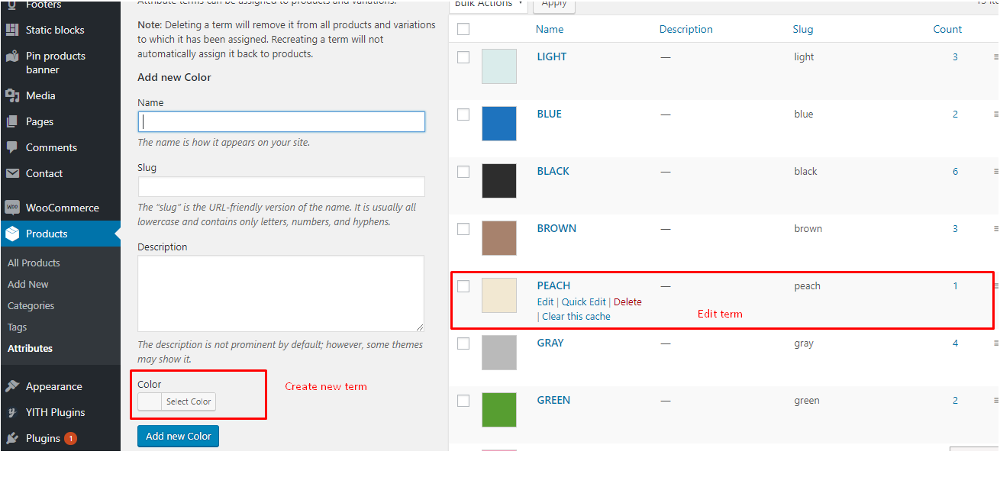
-
Next, set variations for Product variable:
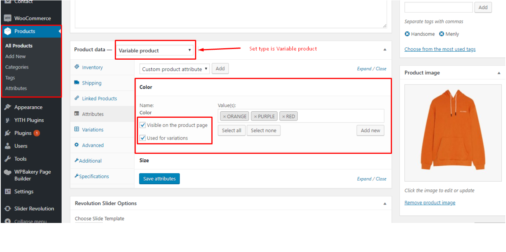
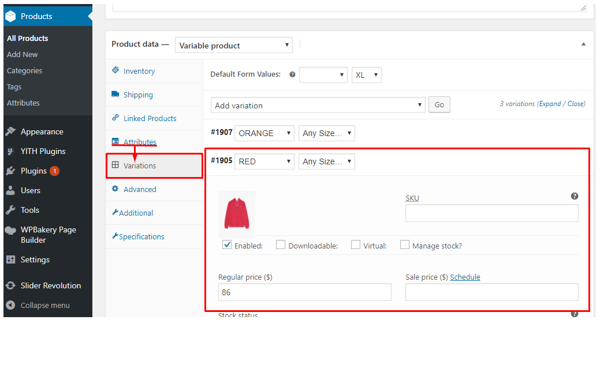
7. How to override header or Footer for each page
- The default, theme will to use header type that you selected in Selamoo Options -> Header and Footer. This header use for all page But you can custom footer type for each page. Please do as bellow for do this:
- Go to Dashboard -> Edit page.
- Click to Options Page -> Select Header type or Footer type for override this page.
- Click Update
8. How to insert new label or sale label to the mega menu
- Navigate Dashboard -> Menus -> Open mega menu sub item.
- Input to the CSS Classes (optional)
- new-label for NEW label
- sale-label for SALE label
- hot-label for SALE label
9. How to Updating the Theme
9.1 Manual Update
Follow the steps below to manually update the theme:
- Backup theme-folder on your server.
- Download the new theme package from ThemeForest. You have to log into your ThemeForest account and navigate to the Downloads tab. You find the theme in your purchased themes list.
- Go to https://themeforest.net/downloads and download the new version.
- Unzip theme package.
- You can delete the current theme. Don't worry about this. Your data won't be lost.
- Copy override theme folder to theme directory on your server.
Please ensure that you only upload the installable wordpress file. If not, you may get an error message: The package could not be installed. The theme is missing the style.css stylesheet.
9.2 Automatic Update
you need install plugin Envato Market to auto-update theme when releasing a new version.
Please view doc and download plugin Envato Market here: https://envato.com/market-plugin/
P/S: Updating this theme will not lose any customizations you have made if you are using child-theme and all custom work in child-theme.
10. How to use the AJAX Filter Product by Color
- Navigate Dashboard > Appearance > Widgets.
- Drag Nasa Products Variations Filter to the Shop Sidebar
- Click Edit this Widget and set some parameter as bellow:
- Titile: The widget title
- Attribute: Select Color
- Query type: Select OR || AND
- Click Save button to finish
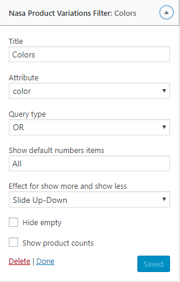
11. How to use the AJAX Filter Product by Categories / How to add icon to the Product Categories
- Navigate Dashboard > Appearance > Widgets.
- Drag Nasa Product Categories to the Shop Sidebar widget
- Show hierarchy
- Show as Accordion: Show the Categories list as the Accordion layout.
- Select icon for each Category: Click to "Click select icon for" and choose the icon on the widow right
- Click Save button to finish
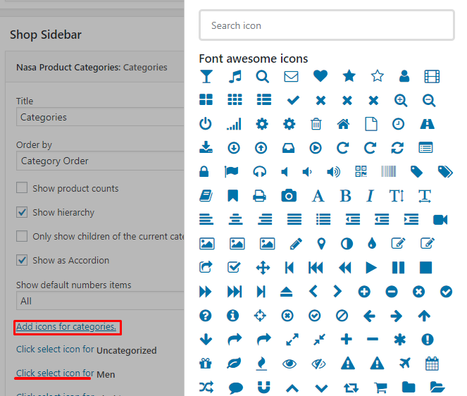
12. How to Import Slides Manually
- Navigate Dashboard > Slider Revolution > Click Import Slider.
- Zip files get from: / Your download package / revsliders /
Additional questions & support
Didn't find necessary information in our documentation?
We aim to help our clients if they have any unresolved difficulties.
For this reason, if you still have questions we will be happy to answer them. Please open your support ticket at http://support.Selamoo.com or contact us via email: nasathemes@gmail.com
Thank you for purchasing the Selamoo Theme!
© Selamoo.com. All Rights Reserved.